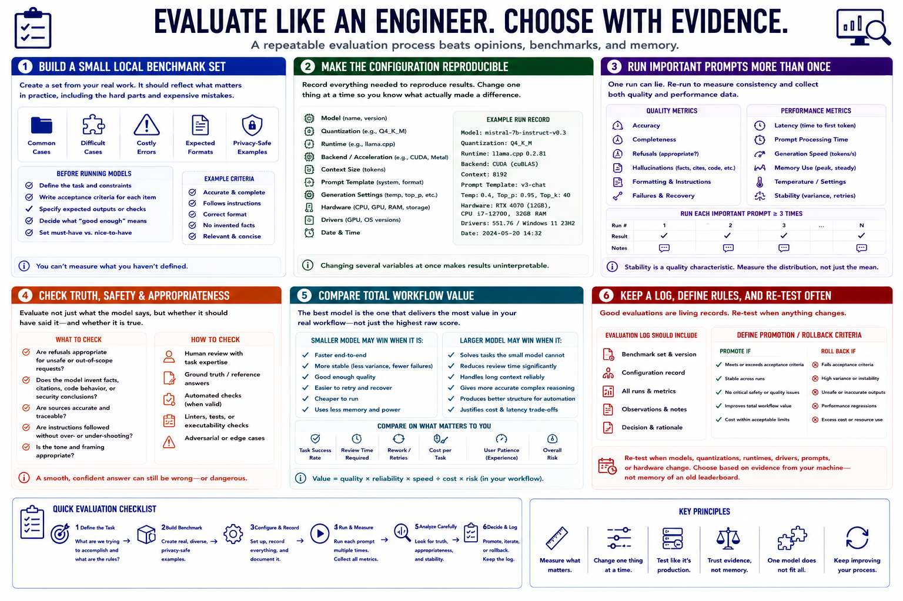

Testing and Comparing Models
Connecting to LMS... Progress: in progress

Narration
Create a small local benchmark set from real work. Include common cases, difficult cases, costly errors, expected formats, and privacy-safe examples. Write acceptance criteria before seeing model results.
Keep the configuration reproducible: model, quantization, runtime, backend, context, prompt template, generation settings, hardware, drivers, and date. Changing several variables at once makes results difficult to interpret.
Run important prompts more than once. Record accuracy, completeness, refusals, hallucinations, formatting, latency, prompt processing, generation speed, memory, temperature, failures, and recovery. Stability is a quality characteristic.
Evaluate whether refusals are appropriate and whether the model invents facts, citations, code behavior, or security conclusions. A smooth answer can still be wrong. Use task-specific review or automated checks where they are valid.
Compare total workflow value. A smaller model may finish more tasks correctly because it is fast, stable, and easy to retry. A larger model may reduce review on difficult tasks enough to justify its cost.
Keep an evaluation log and define promotion or rollback criteria. Re-test when models, quantizations, runtimes, drivers, prompts, or hardware change. Choose based on evidence from the actual machine, not memory of an old leaderboard.